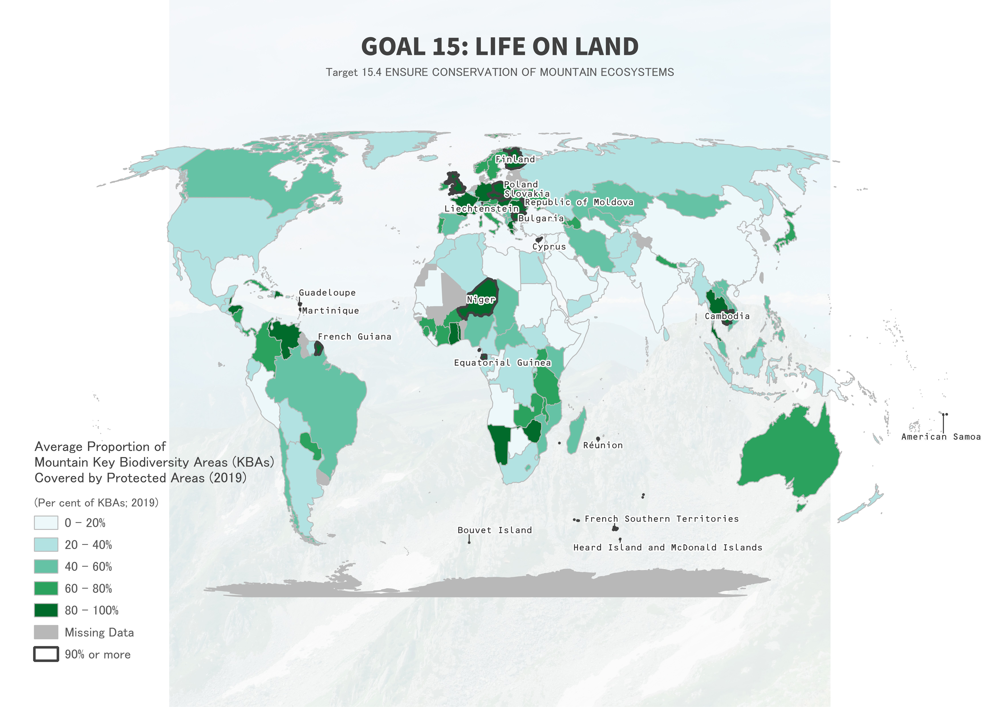
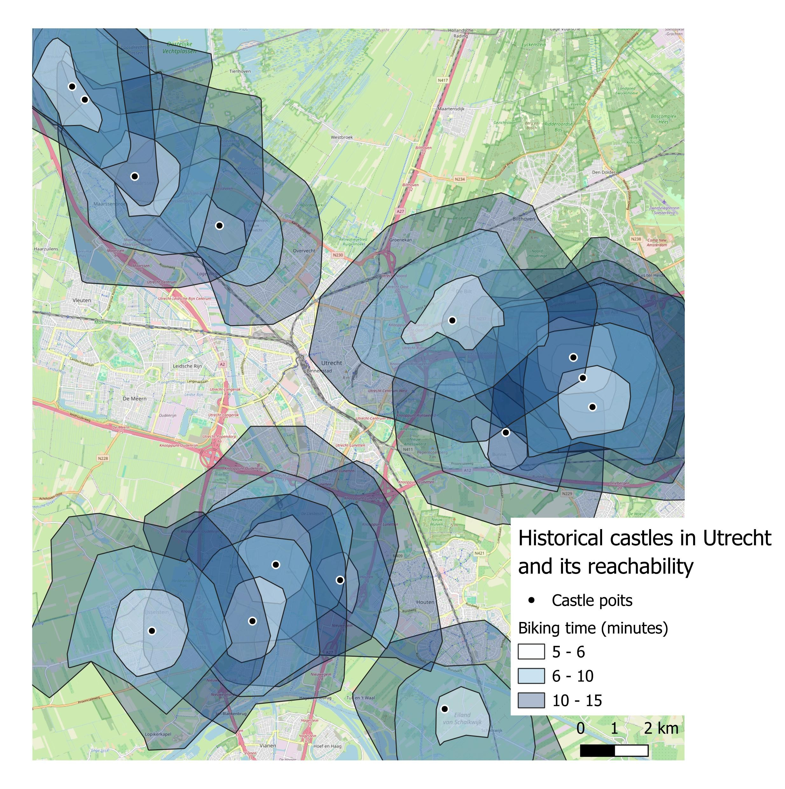
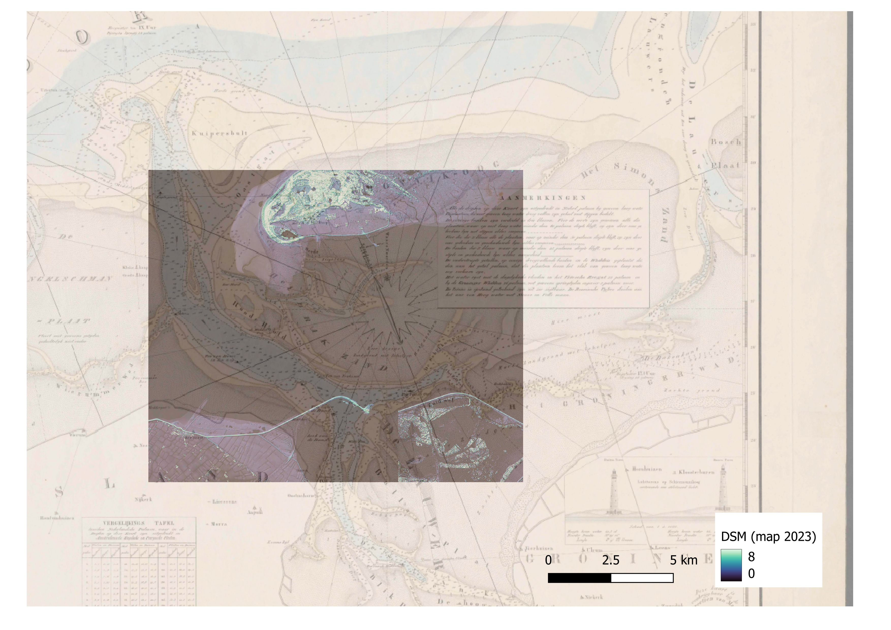
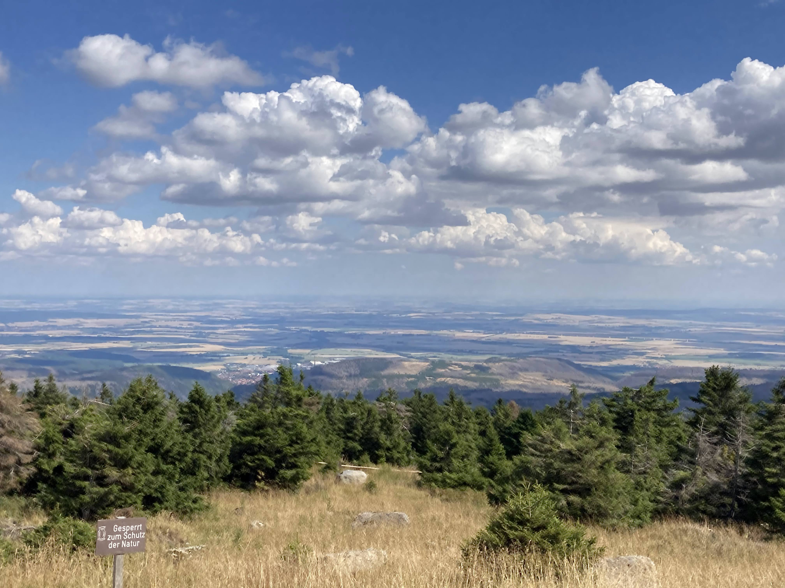
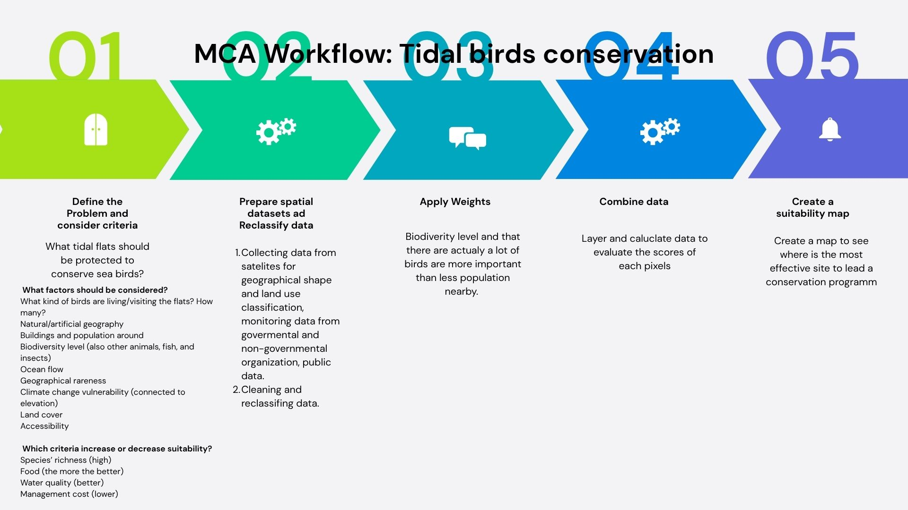

Choropleth — SDG 15
Indicator 15.4.1: Mountain KBAs covered by protected areas.
Open map →I am a Liberal Arts and Science student at University College Utrecht. I am majoring in Earth and Environment and Biology and minoring in Anthropology. My scientific career started in Shiga, the region with the biggest lake in Japan, through a training program for young scientists. My interests are mainly in vegetation, ecosystems, and geology. My goal is to investigate human-nature relationships and find possibilities for humanity to live with nature.
QGIS; ArcGIS Pro; Google Earth Engine; Remote Sensing; Spatial Analysis; Cartography; Python; JavaScript; GeoJSON; MapLibre GL
Geographical Information Systems, in short, GIS is a computer-based technology used to create a map through selecting, combining, and analyzing geographical or spatial data. It is used in research and decision-making processes in many different fields, such as urban planning, agriculture, or business. This technology is crucial for approaching global challenges since we need to deal with bigger and more complicated data and make significant decisions.

Indicator 15.4.1: Mountain KBAs covered by protected areas.
Open map →
Bike reachability analysis using OpenRouteService.
Open map →
Comparing a 19th-century hydrographic chart with modern elevation models.
Open map →
NDVI analysis and change detection between 2017 and 2025.
Open map →
What are other important methods of GIS?
Open map →